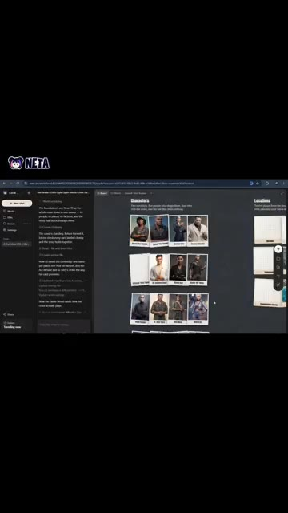
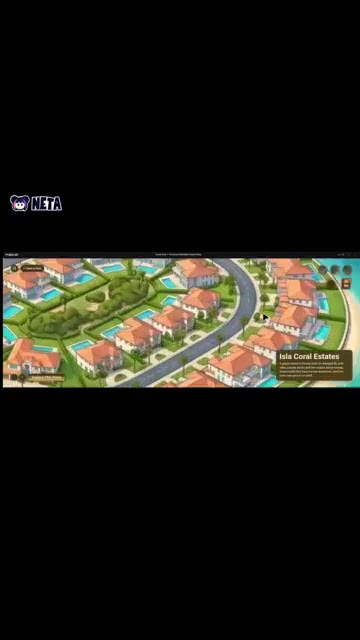
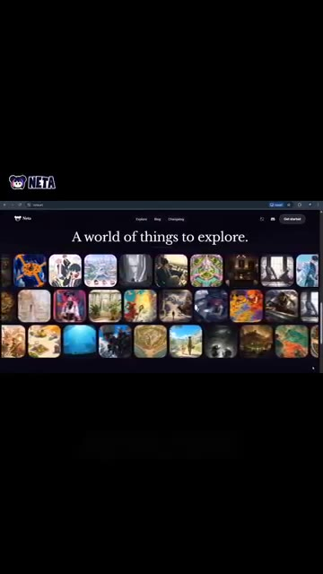

La vidéo « J'ai transformé mon imagination en monde IA » de Pursuing AI met en lumière une avancée majeure dans la création de contenus visuels par intelligence artificielle : le passage de la simple génération d'images isolées à la conception d'univers immersifs interconnectés. Le cœur de cette révolution repose sur **Netta Studio**, une plateforme novatrice qui permet aux créateurs de matérialiser instantanément une vision abstraite pour la transformer en un monde cohérent, peuplé de lieux singuliers et de personnages récurrents. Grâce à des outils de cartographie interactive, l'IA ne se contente plus d'illustrer un prompt, elle structure un territoire virtuel navigable.
La méthode présentée par le créateur s'articule autour d'un workflow fluide et itératif : partir d'une simple impulsion créative, générer des environnements visuels riches, puis utiliser la fonctionnalité **World Map** pour assembler ces décors et visualiser leur topographie globale. L'étape suivante — et la plus spectaculaire — consiste à injecter des mouvements de caméra en POV (point de vue à la première personne) pour simuler une exploration physique au cœur de l'œuvre. Des technologies complémentaires telles que **Seedance 2.5**, **Kling 3.0** et **Midjourney** interviennent en arrière-plan pour garantir une fidélité esthétique et une fluidité cinématique de haut niveau.
Pour les vidéastes, les réalisateurs et les créateurs de contenu, cette approche ouvre des perspectives inédites en matière de pré-visualisation, de world-building et de storytelling immersif. Il devient possible de concevoir des décors de films, des environnements de jeux vidéo ou des expériences interactives en un temps record, sans nécessiter de lourdes compétences en modélisation 3D ou en animation traditionnelle. L'imagination devient ainsi le seul frein, transformant chaque spectateur potentiel en explorateur d'un univers unique.
Et si vous pouviez transformer votre imagination en un monde entier et y marcher pour de vrai ? Voici Netta Studio. Partez simplement d'une idée et regardez-la se transformer en un monde rempli de lieux et de personnages uniques. Mais c'est là que ça devient intéressant. Avec World Map, vous pouvez rassembler vos lieux et voir comment votre monde se connecte. Et le plus cool dans tout ça ?
Interface & Outils : Netta Studio (application web de génération de mondes virtuels par IA).
Contenu textuel & Code : On distingue une interface sombre avec un panneau latéral de chat textuel, un tableau central affichant des fiches de personnages sous l'onglet « Characters », et une vue de carte interactive (« World Map ») montrant un quartier résidentiel avec des maisons aux toits de tuiles oranges et des piscines, étiqueté « Isla Coral Estates ».
Action / Démonstration : Le curseur navigue dans l'interface de Netta Studio pour présenter la gestion des personnages et l'exploration de la carte du monde.

🔍 Agrandir
🔍 AgrandirVous pouvez générer des vidéos en POV à la première personne et vivre votre création comme si vous y marchiez réellement. Votre imagination devient un monde que vous pouvez explorer et partager. Vous voulez construire le vôtre ? Découvrez Netta Studio sur netta.art.
Interface & Outils : Navigateur web affichant le site officiel de Netta Studio (netta.art) avec une interface d'exploration visuelle sous forme de galerie de vignettes.
Contenu textuel & Code : Texte principal visible : "A world of things to explore.", menu de navigation en haut ("Explore", "Blog", "Changelog") et boutons de connexion/démarrage ("Get started"). Grille de nombreuses vignettes miniatures représentant divers environnements et mondes virtuels générés. Logo "NETTA" visible dans le coin supérieur gauche.
Action / Démonstration : Navigation sur le site web de Netta Studio montrant la galerie des mondes disponibles à l'exploration.

🔍 Agrandir